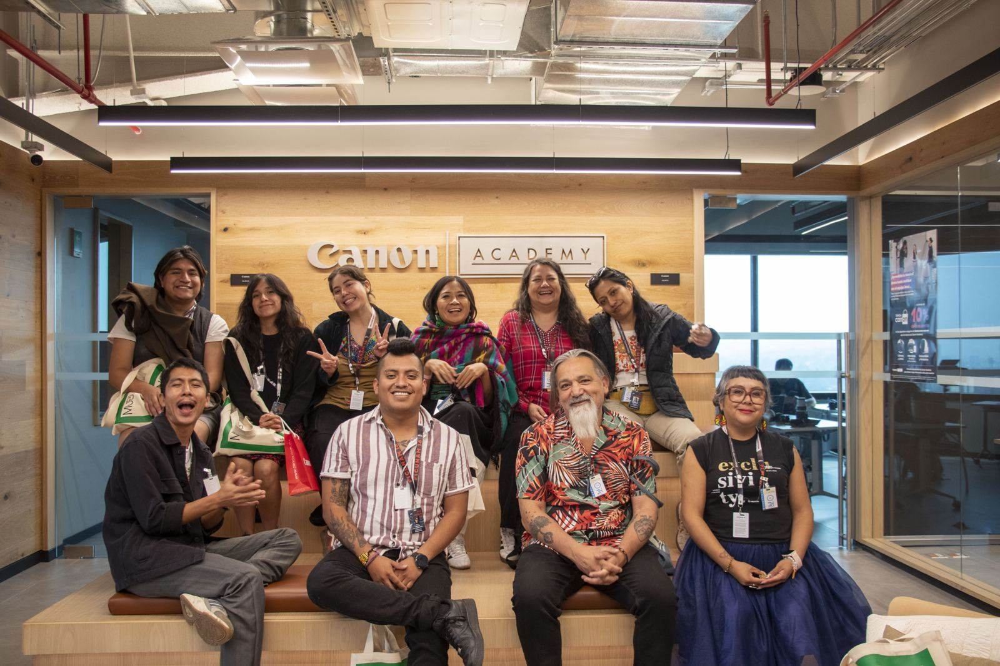

Festivals · Film
Festival Internacional de Cine y Creatividad de Los Cabos 2026
- Dates
- –
- Location
- Los Cabos, Mexico
- Format
- In-person
- Category
- Film
- Industry
- Film
- Organiser
- FICC Los Cabos
- Official website
- https://www.imcine.gob.mx/nota.php?id=359
About
14th edition, concept #BeyondTheScreen. Los Cabos is on UTC-7. Mexico dates are local (Mexico City time, UTC-6, unless the venue is in another Mexican time zone).
Topics: film, creative industries.
No organiser attendance figure found on the official pages checked (23 Nov 2026). Ranked by an estimated size tier 'medium' (about 1,000-10,000 attendees; our judgement from format, venue and scale, not an official number).
Sources
- Official (IMCINE, federal film institute) — https://www.imcine.gob.mx/nota.php?id=359